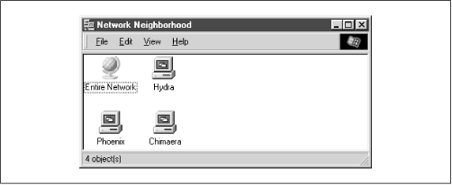
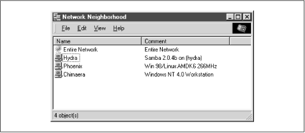

Using Samba
Robert Eckstein, David Collier-Brown, Peter Kelly1st Edition November 1999
1-56592-449-5, Order Number: 4495
416 pages, $34.95
|
|
Using SambaRobert Eckstein, David Collier-Brown, Peter Kelly1st Edition November 1999 1-56592-449-5, Order Number: 4495 416 pages, $34.95 |
4.4 Server Configuration
Now it's time to begin configuring your Samba server. Let's introduce three basic configuration options that can appear in the
[global]section of your smb.conf file:[global] # Server configuration parameters netbios name = HYDRA server string = Samba %v on (%L) workgroup = SIMPLEThis configuration file is pretty simple; it advertises the Samba server on a NBT network under the NetBIOS name
hydra. In addition, the machine belongs to the workgroup SIMPLE and displays a description to clients that includes the Samba version number as well as the NetBIOS name of the Samba server.If you had to enter
encrypt passwords=yesin your earlier configuration file, you should do so here as well.Go ahead and try this configuration file. Create a file named smb.conf under the /usr/local/samba/lib directory with the text listed above. Then reset the Samba server and use a Windows client to verify the results. Be sure that your Windows clients are in the SIMPLE workgroup as well. After clicking on the Network Neighborhood on a Windows client, you should see a window similar to Figure 4.2. (In this figure,
phoenixandchimaeraare our Windows clients.)Figure 4.2: Network Neighborhood showing the Samba server
You can verify the
serverstringby listing the details of the Network Neighborhood window (select the Details menu item under the View menu), at which point you should see a window similar to Figure 4.3.Figure 4.3: Network Neighborhood details listing
If you were to click on the Hydra icon, a window should appear that shows the services that it provides. In this case, the window would be completely empty because there are no shares on the server yet.
4.4.1 Server Configuration Options
Table 4.3 summarizes the server configuration options introduced previously. Note that all three of these options are global in scope; in other words, they must appear in the
[global]section of the configuration file.
Table 4.3: Server Configuration Options Option
Parameters
Function
Default
Scope
netbios namestring
Sets the primary NetBIOS name of the Samba server.
Server DNS hostname
Global
server stringstring
Sets a descriptive string for the Samba server.
Samba %vGlobal
workgroupstring
Sets the NetBIOS group of machines that the server belongs to.
Defined at compile time
Global
4.4.1.1 netbios name
The
netbiosnameoption allows you to set the NetBIOS name of the server. For example:netbios name = YORKVM1The default value for this configuration option is the server's hostname; that is, the first part of its complete DNS machine name. For example, a machine with the DNS name
ruby.ora.comwould be given the NetBIOS nameRUBYby default. While you can use this option to restate the machine's NetBIOS name in the configuration file (as we did previously), it is more commonly used to assign the Samba server a NetBIOS name other than its current DNS name. Remember that the name given must follow the rules for valid NetBIOS machine names as outlines in Chapter 1, Learning the Samba.Changing the NetBIOS name of the server is not recommended unless you have a good reason. One such reason might be if the hostname of the machine is not unique because the LAN is divided over two or more DNS domains. For example, YORKVM1 is a good NetBIOS candidate for vm1.york.example.com to differentiate it from vm1.falkirk.example.com, which has the same hostname but resides in a different DNS domain.
Another use of this option is for relocating SMB services from a dead or retired machine. For example, if
SALESis the SMB server for the department, and it suddenly dies, you could immediately resetnetbiosname=SALESon a backup Samba machine that's taking over for it. Users won't have to change their drive mappings to a different machine; new connections toSALESwill simply go to the new machine.4.4.1.2 server string
The
serverstringparameter defines a comment string that will appear next to the server name in both the Network Neighborhood (when shown with the Details menu) and the comment entry of the Microsoft Windows print manager. You can use the standard variables to provide information in the description. For example, our entry earlier was:[global] server string = Samba %v on (%h)The default for this option simply presents the current version of Samba and is equivalent to:
server string = Samba %v4.4.1.3 workgroup
The
workgroupparameter sets the current workgroup where the Samba server will advertise itself. Clients that wish to access shares on the Samba server should be on the same NetBIOS workgroup. Remember that workgroups are really just NetBIOS group names, and must follow the standard NetBIOS naming conventions outlined in Chapter 1. For example:[global] workgroup = SIMPLEThe default option for this parameter is set at compile time. If the entry is not changed in the makefile, it will be
WORKGROUP. Because this tends to be the workgroup name of every unconfigured NetBIOS network, we recommend that you always set your workgroup name in the Samba configuration file.[2][2] We should also mention that it is an inherently bad idea to have a workgroup that shares the same name as a server.
 |
 |
 |
| 4.3 Configuration File Options |
 | 4.5 Disk Share Configuration |
© 1999, O'Reilly & Associates, Inc.